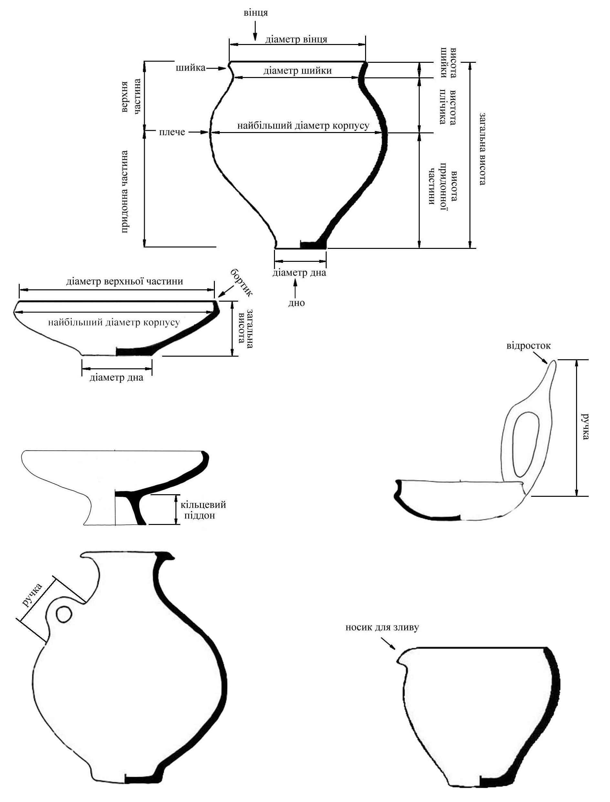

Пропорция шейки (ФА):
Угол наклона шейки (ФБ):
Пропорция плечика (ФВ):
Угол крутизны плечика (ФГ):
Общая пропорция сосуда (ФД):
Высота плечика (ФЕ):
Общая конфигурация (попорция) верхней части сосуда (ФЖ):
Общая конфигурация придонной части сосуда (ФИ):
